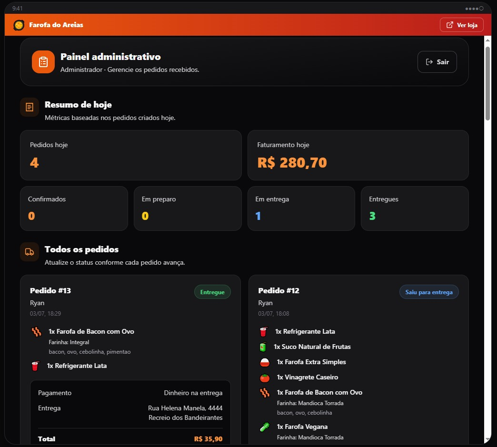

Projeto principal full-stack
Farofa do Areias
Aplicação full-stack de pedidos para restaurante, com fluxo de cliente, acompanhamento público do pedido e painel administrativo.
Demonstra autenticação, regras de status, validação no servidor, cálculo de preços, banco relacional, testes automatizados e CI.
Ver código